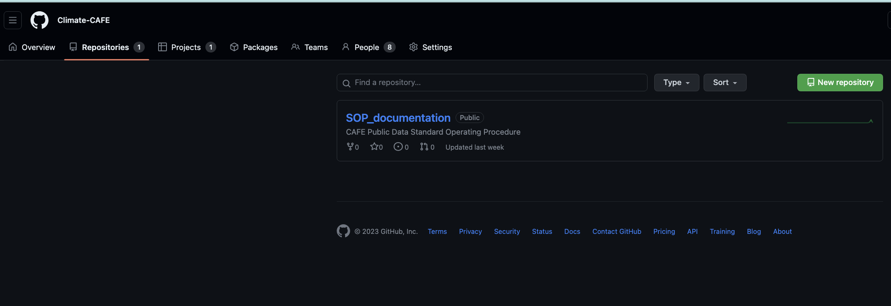
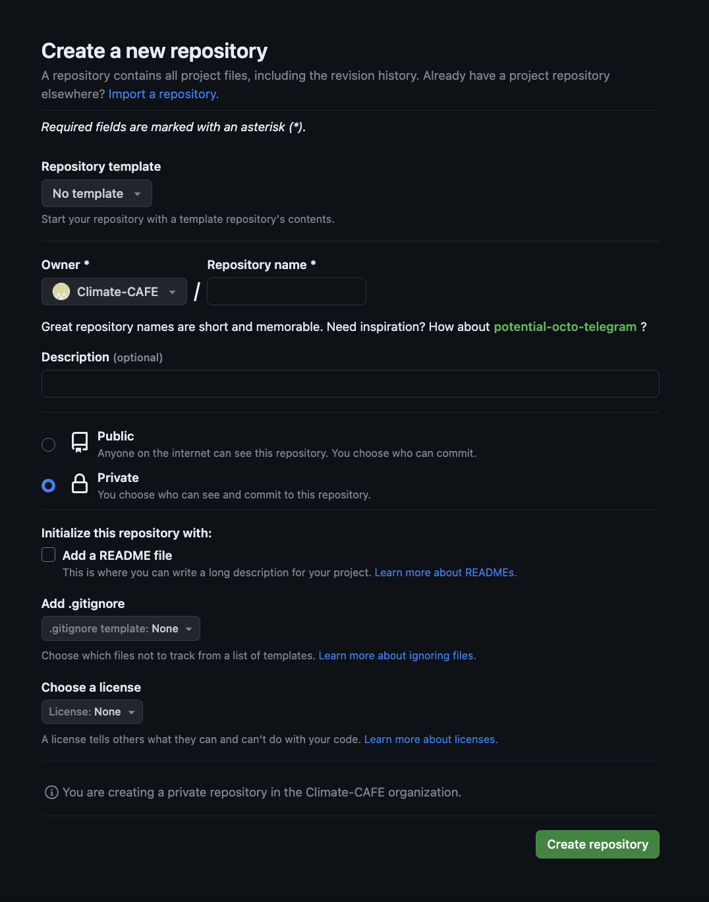
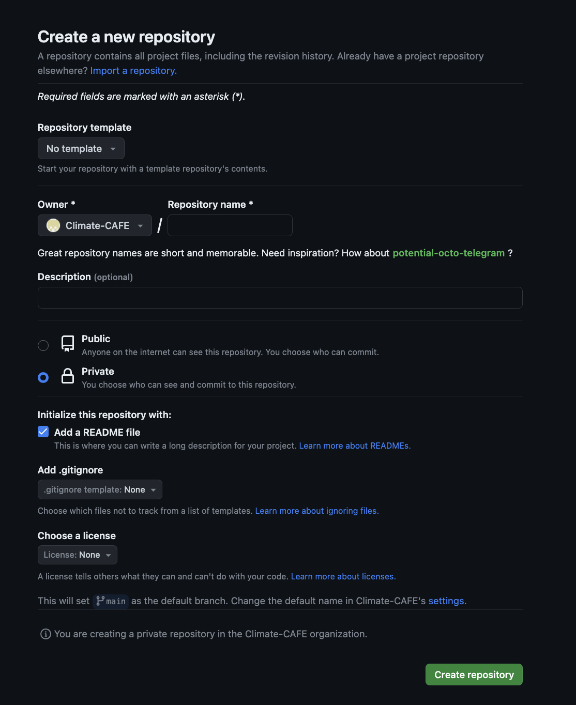

Getting Started with GitHub#
GitHub is a powerful platform for version control and collaborative development. This tutorial will guide you through the process of creating a new repository, cloning an existing repository, and pushing code changes to it.
Table of Contents#
Creating a New Repository
Cloning a Repository
Pushing Code to a Repository
1. Creating a New Repository#
Step 1: Sign In or Create an Account#
If you don’t have a GitHub account, go to GitHub’s website and sign up. If you already have an account, sign in.
Step 2: Create a New Repository#
Click on the “+” sign in the upper right corner of the GitHub homepage.
Select “New Repository” from the dropdown menu.

Step 3: Fill in Repository Details#
Repository Name: Choose a unique name for your repository.
Description: Add a brief description of your project (optional).
Visibility: Choose between public (visible to everyone) or private (only visible to collaborators).

Step 4: Initialize with a README#
Select the “Initialize this repository with a README” option. This will create an initial README file for your repository.

Step 5: Create Repository#
Click the “Create repository” button to create your new repository.
2. Cloning a Repository#
Step 1: Find a Repository to Clone#
You can clone both your own repositories or those shared by others.
Step 2: Get the Repository URL#
Open the repository you want to clone.
Click the “Code” button.

Copy the repository URL.
Step 3: Clone the Repository Locally#
Open your terminal or command prompt and navigate to the directory where you want to clone the repository.
cd /path/to/your/directory
Use the git clone command followed by the repository URL you copied:
git clone https://github.com/username/repository-name.git
Replace https://github.com/username/repository-name.git with the actual repository URL.
Step 4: Access the Cloned Repository#
You now have a local copy of the repository on your computer.
3. Pushing Code to a Repository#
Step 1: Make Changes#
Make changes to the files in your local repository using your preferred code editor or IDE.
Step 2: Stage and Commit Changes#
Stage the changes by using the
git addcommand:
git add .
This stages all the changes in your local repository.
Commit the changes with a descriptive message:
git commit -m "Your commit message here"
Replace "Your commit message here" with a brief, informative message about the changes you made.
Step 3: Push Changes to GitHub#
Use the git push command to send your committed changes to GitHub:
git push origin main
Replace main with the name of the branch you’re working on, e.g., master or develop.
Step 4: Verify Changes on GitHub#
Visit your GitHub repository in a web browser to see your changes reflected in the repository.
Step 5: Obtaining GitHub token#
You can follow the following steps, to obtain a GitHub token:
Log in to your GitHub account and go to your “Settings” page.
Click on “Developer settings” in the left-hand sidebar.
Click on “Personal access tokens” and choose “Tokens (classic)”.
Click on “Generate new token” then “Generate new token (classic)” .
Give your token a description, so you can remember what it is for.
Select all the scopes available.
Click on “Generate token”.
Note
Your new token will be displayed. Be sure to copy it and save it for future use, as you won’t be able to see it again.
Once you have generated a token, you can use it to authenticate with the GitHub API or access repositories that require authentication. Keep your token secret and avoid sharing it with others to protect your GitHub account’s security.